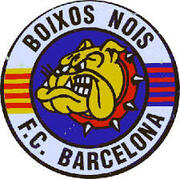
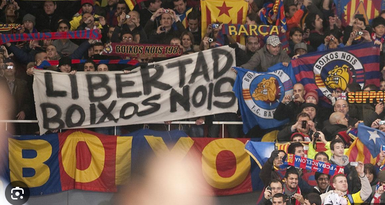

Ultras
Els Boixos Nois són un grup radical de suport al Futbol Club Barcelona, fundat el 1981.
En 2019, la Comissió Estatal contra la Violència els va declarar grup radical violent, prohibint l'exhibició de la seva simbologia en els camps de futbol.
El logo del grup és una roda blanca amb un bulldog al centre, i a cada costat hi té la senyera catalana i la bandera del Barça. A dalt hi posa “Boixos Nois” i a baix “FC Barcelona”.
Era una aficio moilt dura, actualment ja no poden entrar al Camp Nou.
